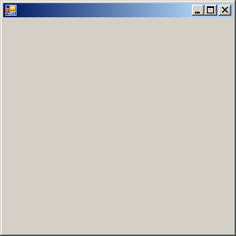

آموزش ویندوز فرم به زبان سی شارپ
بنام خدا

ساخت برنامه های تحت ویندوز همواره مورد توجه برنامه نویسان بوده است.
مایکروسافت برای ایجاد برنامه های تحت ویندوز از تکتولوژی های مختلفی از جمله :
Windows Form Apllication , WPF , UWP بهره میبرد .
اولین تکنولوژی ارائه شده در این راستا , ویندوز فرم اپلیکیشن میباشد.
لازم به ذکر است این دوره آموزشی در سال 90 و در وبسایت قبلی مجموعه ایجاد گردیده بود که بدلیل برخی از مشکلات در هنگام ضبط آرشیو , در گروه آموزشی طلوع قرار داده نشد .
بنا بردرخواست دانشجویان محترم مبنی بر ارائه این دوره , حتی المقدور مشکلات ضبط برطرف گردید و این دوره بصورت رایگان در اختیار علاقمندان قرار گرفته است.

دانلود فایل های آموزشی (رایگان)
- دانلود قسمت اول آموزش ویندوز فرم
- دانلود قسمت دوم آموزش ویندوز فرم
- دانلود قسمت سوم آموزش ویندوز فرم
- دانلود قسمت چهارم آموزش ویندوز فرم
- دانلود قسمت پنجم آموزش ویندوز فرم
- دانلود قسمت ششم آموزش ویندوز فرم
- دانلود قسمت هفتم آموزش ویندوز فرم
- دانلود قسمت هشتم آموزش ویندوز فرم
- دانلود قسمت نهم آموزش ویندوز فرم
- دانلود قسمت دهم آموزش ویندوز فرم
- دانلود قسمت یازدهم آموزش ویندوز فرم
- دانلود قسمت دوازدهم آموزش ویندوز فرم
- دانلود قسمت سیزدهم آموزش ویندوز فرم
- دانلود قسمت چهاردهم آموزش ویندوز فرم
- دانلود قسمت پانزدهم آموزش ویندوز فرم
- دانلود قسمت شانزدهم آموزش ویندوز فرم
- دانلود قسمت هفدهم آموزش ویندوز فرم
- دانلود قسمت هجدهم آموزش ویندوز فرم
- دانلود قسمت نوزدهم آموزش ویندوز فرم
- دانلود قسمت بیستم آموزش ویندوز فرم
- دانلود قسمت بیست و یکم آموزش ویندوز فرم
- دانلود قسمت بیست و دوم آموزش ویندوز فرم
- دانلود قسمت بیست و سوم آموزش ویندوز فرم
- دانلود قسمت بیست و چهارم آموزش ویندوز فرم
- دانلود قسمت بیست و پنجم آموزش ویندوز فرم
- دانلود قسمت بیست و ششم آموزش ویندوز فرم
- دانلود قسمت بیست و هفتم آموزش ویندوز فرم
- دانلود قسمت بیست و هشتم آموزش ویندوز فرم
- دانلود قسمت بیست و نهم آموزش ویندوز فرم
- دانلود قسمت سی ام آموزش ویندوز فرم
- دانلود قسمت سی و یکم آموزش ویندوز فرم
- دانلود قسمت سی و دوم آموزش ویندوز فرم
- دانلود قسمت سی و سوم آموزش ویندوز فرم
- دانلود قسمت سی و چهارم آموزش ویندوز فرم
- دانلود قسمت سی و پنجم آموزش ویندوز فرم
- دانلود قسمت سی و ششم آموزش ویندوز فرم
- دانلود سورس کد های آموزش
نظرات شما
قسمت نظرات با استفاده از سرویس دیسکاس پیاده سازی شده است. متأسفانه این سرویس از داخل ایران قابل دسترس نیست. لطفا از آی پی خارجی استفاده کنید.